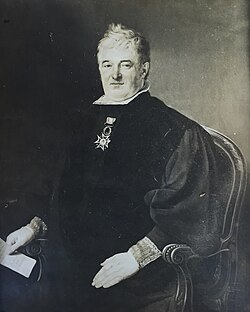

Comerciante de próspera fortuna, en 1798 se trasladó a Madrid, donde, en 1800,
se convirtió en miembro de la Junta de Gobierno del Banco de San Carlos; en 1804 fue el primer
director de la Sociedad de Comerciantes formada por orden de Carlos IV para proveer de grano al
Reino en la grave carestía de ese año. En 1808 era propietario de seis casas en Madrid y poseía
intereses en Málaga, La Mancha, Cádiz, Lisboa y Alicante; en total contaba con una fortuna de
cuatro millones y medio de reales. Se casó dos veces, la primera con María López de la Huesa y
la segunda con Catalina Pérez; tuvo un solo hijo, de su segunda mujer, de nombre Juan Luis Calvo Pérez.
Al estallar la Guerra de la Independencia huyó a Zaragoza, donde estaba su primera esposa.
Allí fue detenido al principio como sospechoso, pero después se transformó en la eminencia
gris del defensor José de Palafox, quien le dio los cargos de corregidor de Zaragoza e
intendente del Reino y ejército de Aragón, relevando de ellos al coronel Garcini, tenido por godoísta.
También fue designado secretario de las Cortes de Aragón, reunidas por primera y única vez el 9 de junio de 1808
, vocal de la Junta militar de Defensa y jefe inmediato de los alcaldes de barrio durante todo el primer asedio,
cuya defensa contribuyó a organizar eficazmente, aun a costa de ganarse las antipatías de los zaragozanos,
quienes veían en él a un engreído. Liberó a Antonio Sangenis (que estaba recluido por presunta traición)
y con su trabajo y supervisión se reunió material y personal suficiente para fortificar la ciudad,
apagar incendios y repartir víveres entre la población, y además ordenó debidamente la economía y
contabilidad. Destacó su labor en el salvamento de los enfermos del hospital de Nuestra Señora de Gracia
tras su entrevista con el general Lefévbre.

(Retrato por José de Madrazo, 1821) Ramón Calvo de Rozas, hermano de Lorenzo Calvo de Rozas.
Ministro del tribunal de seguridad pública, Alcalde mayor de la Audiencia de Galicia y del Crimen,
Fiscal general de la Real Casa y Patrimonio, Consejero honorario de Hacienda,
Caballero de la Orden de Carlos III, Masón, Consultor del Real Patrimonio y Consejero honorario de Hacienda.
Pasó luego a la Junta Central en Sevilla y el 15 de abril de 1809
propuso la convocatoria de las Cortes. Profundamente liberal, se opuso a todos los atropellos,
defendió la libertad de imprenta y denunció toda intentona reaccionaria,
por ejemplo las del marqués de la Romana, contra el que publicó
El patriotismo perseguido á traición por la arbitrariedad y el egoísmo ó censura del Fiscal
de la Real Audiencia de Sevilla en el expediente de D. Lorenzo Calbo de Rozas,
Representante de Aragón en la suprema Junta Central (1810);
aquel contestó con una Defensa de la conducta militar y política del Excmo.
señor Marques de la Romana y respuesta al libelo publicado por don Lorenzo Calvo de Rozas (1811).
Sin embargo, en vista del caos y anarquía organziativa,
propuso la formación de una Regencia que más tarde le perseguiría sin tregua con el pretexto de unas
presuntas irregularidades en las cuentas de intendencia y fue encarcelado en 1810, prisión que duró
unos meses; en 1811 fue apaleado por el teniente coronel Joaquín Osma tras una discusión política,
lo que motivó las chanzas de Bartolomé José Gallardo en su folleto Apología de los palos.
En 1814 fue de nuevo perseguido por los "persas" y confinado en Coria (Cáceres);
en 1815 pasó a Plasencia y luego a Talavera de la Reina. En 1818 fue de nuevo detenido;
con el triunfo de la revolución de 1820 fue liberado y exonerado de cualquier cargo.
Presidió entonces el club de La Fontana de Oro y en 1820 fue nombrado director general de Rentas
y, en 1821, vocal de la Junta de Aranceles. Ministro de Hacienda el
28 de febrero de 1823 en el gabinete de Álvaro Flórez Estrada, aunque en una situación anómala.
Por entonces esbozó un Plan de Hacienda; en 1824 fue expulsado de Cartagena y
luego de Alicante y se trasladó a Murcia. Después se le permitió volver a Madrid.
En 1831 es presidente de la Sociedad Patriótica de Madrid. Anduvo complicado en la
Conspiración de La Isabelina entre 1833 y 1834, y este último año fue encarcelado y
liberado poco después. La detención tuvo lugar el 23 o el 24 de julio de 1834,
pocos días después de la matanza de frailes en Madrid de 1834. Otra vez detenido en 1836,
presentó desde la cárcel un Plan para acabar con la guerra civil que las Cortes estudiaron
pero no adoptaron; fue liberado en febrero de 1837. En 1849 contribuyó a la formación del
Partido Progresista-Democrático, de tendencias republicanes y socializantes.
Obras
El patriotismo perseguido á traición por la arbitrariedad y el egoísmo ó censura del Fiscal de la Real Audiencia de Sevilla en el expediente de D. Lorenzo Calbo de Rozas, Representante de Aragón en la suprema Junta Central..., Cádiz: Imprenta de D. Manuel Santiago de Quintana 1810.
El impugnador impugnado o sea contestación al folleto anónimo publicado en catorce de marzo último, por el que se firma (sin serlo) El Amigo de la Verdad, y le titula Impugnación al manifiesto de Don Lorenzo Calbo de Rozas con el título de Aviso a los representantes de la Nación española & c., Cádiz: Imp. de Figueroa, 1813.
Representación al Congreso Nacional reclamando sus derechos, su justicia y la observancia de las leyes, Cádiz, Josef Tomás Nebot, 1811.
Reglamento que dio al Consejo interino de Regencia la Suprema Junta Central, motivos que ocasionaron su nombramiento y la abdicación de la misma Junta y proposición hecha en el mes de septiembre de 1809 sobre la libertad de la imprenta, Cádiz, Imprenta Real, 1810.
Representaciones que en el año de 1810 dirigió desde su prisión Lorenzo Calvo de Rozas al Consejo Interino de Regencia: y proposiciones que en 1808 y 1809 hizo a la Suprema Junta Central, para asegurar la libertad y el bien estar de sus conciudadanos, Impr. de la viuda de Vallin, 1813.
Aviso a los representantes de la nación española, y á todos los Ciudadanos, que con hechos, de palabra ó por escrito, han dado pruebas de integridad y amor á la independencia de su Patria , Cádiz: Imp. Tormentaria, al cargo de D. Juan Domingo Villegas, 1813.
Reformas y medidas propuestas en 1809 para la organización y buena asistencia de los exércitos: Y aviso interesante para los que han hecho servicios á la Patria en la presente guerra nacional. [S. l. ¿Cádiz?) [Al fin: Imprenta de D. Manuel Santiago de Quintana] (S.a.: ¿1811?)